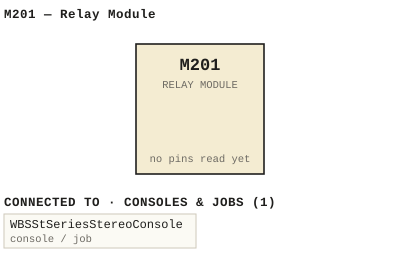

M201 — Relay Module
| Type | module |
| Category | LOGIC |
| Try it | simulator & front panel · download package (zip) |
| Earliest dated evidence | 1979|12 — manual issue date |
| Evidence | "MANUAL ISSUE #1 MARCH 1979" in PUBLIC/Manuals + tech DOCUMENTS/Modules/M201/WBS M201 p1.JPG |
| Confidence | high |
| All years found | 1979|12 |
| Used in jobs | WBSStSeriesStereoConsole |
| Folder | Modules/LOGIC/M201 |
Connections
What it is made of and what it is part of.
Pictures


M201.connections.svg 1979 - M201 - P03.jpg
1979 - M201 - P03.jpg 1979 - M201 - Table of Contents M201 Relay Module.jpg
1979 - M201 - Table of Contents M201 Relay Module.jpg 1979 - M201 - p1.jpg
1979 - M201 - p1.jpg M201 - P03(1).jpg
M201 - P03(1).jpg M201 - P03.jpg
M201 - P03.jpg 1979 - 201-06-001 - RELAY MODULE COMPONENT LAYOUT - DRN MRW - ENG MRW - ISS 1.jpg
1979 - 201-06-001 - RELAY MODULE COMPONENT LAYOUT - DRN MRW - ENG MRW - ISS 1.jpg 1979 - M201 - 201-02-001 - DELAY STRAPPING DELAY NUMPER NUMPER.jpg
1979 - M201 - 201-02-001 - DELAY STRAPPING DELAY NUMPER NUMPER.jpg 1979 - M201 - 201-02-001 - SEC SHORT SHORT OPEN SHORT OPEN OPEN.jpg
1979 - M201 - 201-02-001 - SEC SHORT SHORT OPEN SHORT OPEN OPEN.jpg 1979 - M201 - 201-06-001 - CKO RIL RELAY MODULE COMPONENT LAYOUT.jpg
1979 - M201 - 201-06-001 - CKO RIL RELAY MODULE COMPONENT LAYOUT.jpg 1979 - M201 - 201-06-001 - RELAY MODULE COMPONENT LAYOUT.jpg
1979 - M201 - 201-06-001 - RELAY MODULE COMPONENT LAYOUT.jpg 1979 - M201 - P01 - Cover.jpg
1979 - M201 - P01 - Cover.jpg 1979 - M201 - P02.jpg
1979 - M201 - P02.jpg 1979 - M201 - P04 - Warranty.jpg
1979 - M201 - P04 - Warranty.jpg 1979 - M201 - P05 - 1-1.jpg
1979 - M201 - P05 - 1-1.jpg 1979 - M201 - P06 - 2-1.jpg
1979 - M201 - P06 - 2-1.jpg 1979 - M201 - P07 - 74C221.jpg
1979 - M201 - P07 - 74C221.jpg 1979 - M201 - P08 - 4-1.jpg
1979 - M201 - P08 - 4-1.jpg 1979 - M201 - P09 - 4-2.jpg
1979 - M201 - P09 - 4-2.jpg 1979 - M201 - P10 - 4-3.jpg
1979 - M201 - P10 - 4-3.jpg 1979 - M201 - P13 - Pin outs.jpg
1979 - M201 - P13 - Pin outs.jpg 1979 - M201 - WBS test procedures 1.jpeg
1979 - M201 - WBS test procedures 1.jpeg 1979 - M201 - WBS test procedures 2.jpeg
1979 - M201 - WBS test procedures 2.jpeg 1979 - M201 - WBS test procedures.jpeg
1979 - M201 - WBS test procedures.jpeg 1979 - M201 - p2.jpg
1979 - M201 - p2.jpg 1979 - M201 - p3.jpg
1979 - M201 - p3.jpg 1979 - M201 - p4.jpg
1979 - M201 - p4.jpg 1979 - M201 - p5.jpg
1979 - M201 - p5.jpg 1979 - M201 - p6.jpg
1979 - M201 - p6.jpg 1979 - M201 - p7.jpg
1979 - M201 - p7.jpg 19xx - M201 - Integrated Circuit Data 74C221 Dual Monostable Multivibrator.jpg
19xx - M201 - Integrated Circuit Data 74C221 Dual Monostable Multivibrator.jpg 19xx - M201 - TEST PROCEDURE M201 RELAY MODULE.jpeg
19xx - M201 - TEST PROCEDURE M201 RELAY MODULE.jpeg M201 - P05 - 1-1(1).jpg
M201 - P05 - 1-1(1).jpg M201 - P05 - 1-1.jpg
M201 - P05 - 1-1.jpg M201 - P10 - 4-3(1).jpg
M201 - P10 - 4-3(1).jpg M201 - P10 - 4-3.jpg
M201 - P10 - 4-3.jpg M201 - P12 - Layout.jpg
M201 - P12 - Layout.jpg 1982 - M487 - P09 - 3-4.jpg
1982 - M487 - P09 - 3-4.jpg 19xx - M201 - TEST PROCEDURE M201 RELAY MODULE.jpg
19xx - M201 - TEST PROCEDURE M201 RELAY MODULE.jpgPrice history
| Year | Kind | Price | Listed as | Effective | Source |
|---|---|---|---|---|---|
| 2005|38 | used market value | 5.00 | M201 Relay | wbsps - website ARCHIVE/WBSPS 2008/ARCHIVE/old website/PriceGuide.htm | |
| 2006|39 | used market value | 5.00 | M201 Relay | wbsps - website ARCHIVE/WBSPS 2008/ARCHIVE/jan 2006 shell/priceguide.htm |
Pinout & connections
Dates found in the documents
| Year | Kind | Text | File |
|---|---|---|---|
| 1979|12 | month & year | MARCH 1979 |
1979 - M201 - P03.jpg |
| 1979|12 | manual issue date | MANUAL ISSUE #1 MARCH 1979 |
1979 - M201 - Table of Contents M201 Relay Module.jpg |
| 1979|12 | manual issue date | MANUAL ISSUE #1 MARCH 1979 |
1979 - M201 - p1.jpg |
| 1979|12 | month & year | MARCH 1979 |
M201 - P03(1).jpg |
| 1979|12 | manual issue date | MANUAL ISSUE# MARCH 1979 |
M201 - P03.jpg |
Physical manual inventory
| Item | Location | Status | Scanned |
|---|---|---|---|
| M201 | Recently scanned and stiched by WB | ||
| M201 Relay Module | PDF - Already scanned |
Documents (2)
| Year | File | |
|---|---|---|
| 1979|12 | 1979 - M201 - Relay Module (2).pdf | note |
| 1979|12 | 1979 - M201 - Relay Module.pdf | note |
Photos & scans (36)


Parts list — board M201 (9 parts)
From 1979 - M201 - p5.jpg, page 1 (scanned); also in timelines/data/bom.csv.
| Ref | Part | Value | Manufacturer | Mfr part no. |
|---|---|---|---|---|
| M201 | RELAY MODULE | |||
| CR1 | Diode Motoro]a | 1n4003 | ||
| CR2 | Fairchild | 1N4148 | ||
| CR4 | Motoro]a | 1N4003 | ||
| K1 | Relay Siemens | V23030-42021-4104 | ||
| Q1 | Transistor Nationa] | 2N3569 | ||
| R1 | Resistor 'W Philips | 5 % | ||
| R4 | Trim pot Piher PT | 10h | (2.5) | |
| R5 | Res istor XW Philips | 5 % |
Consoles & jobs it is connected to (1)
Their own drawings name this module.
| Job | Year | Drawing | Page |
|---|---|---|---|
| WBSStSeriesStereoConsole | 1985 - ST - ward beck systems st console installation.pdf | 13 |
Named in other drawings & documents (14)
From the manuals
Each manual split into its sections. Text that is the same in many Ward-Beck manuals (warranty, address, standard notes) is kept once on the Boilerplate page and linked.
General description (2)
Description — 234 words · 1979 - M201 - p2.jpg, page 1
M2O1 RELAY MODULE The M2O1 Re ]ay Modul e is des igned to be used a$ a n audi0 switcher It comprises two identica1 relay switching circuits each capab ] e 0 f switching either one 0 f two ba lanced inputs to one baTanced output _ Provision is made for insertion 0 f fixed Toss attenuator into the norma TTy open pa th expanding the usefulness 0 f the module for app] ications such as sTating part-muting and s imilar functions The open circuit voltage a t modu ] e pin 2 is approximately +9 volts_ With the contro] terminai floating the a ssociated relay wil] be de-energized Alternatively , Togic 1" voltage_supp]ied to the control termina] , ranging from +9 t0 +30 vo]ts , will a ] 50 keep the reTay de-energized Once logic "0" is appl ied to the contro] input , ranging from 0 to +2 volts , the a ssocjated relay Wil] energize_ Separate adjustab]e delays may be selected for the relay pull-in and drop-out times For adjustment 0 f the delay times refer to the schematic_ A separate timing diagram on page 2-1 shows the operation 0 f the Togic circuitry.
Pins B and P 0 f the module connector are each capab ]e 0 f sinking current 0 f approximately 20 ma max imum for such purposes a $ externa 1 contro] and/or an indicator Tamp 1-1
- source: 1979 - M201 - p2.jpg, p. 1
Description — 50 words · 1979 - M201 - p7.jpg, page 1
MFG MFG PART NUMBER Integrated Circuit Nationa 1 MM74C14N MMT4C221N 93 US U6 MMZ4COON Voltage Regulator LM340T-12 Component va ]ue depends on specific mode ] Consult schematic for deta i15 HBS recommends the us e 0f replacement parts made by the specified manufacturers for continued optimum equipment performance . 4-3
- source: 1979 - M201 - p7.jpg, p. 1
Maintenance & alignment (3)
Test Procedure — 227 words · 1979 - M201 - WBS test procedures.jpeg, page 1
M2o1 RELAY MODULE Reference: M2o1 Manual Inspect module for correct assembly 2 a) Insert module into WBS M2o1 TEST JIG . b ) Apply +25 DC to the red POWER binding post on the test jig (black is DC common ) c) Measure the supply current which should be approximately 30 mA (relays de-energized) d) Apply test jig_ dBm signal to the input binding posts of the e) Connect an oscilloscope or AC voltmeter (eg HP 400 FL) to the output binding posts 3 Switch the AUDIO SELECT to SECTION position A, and place the TRANSFER switch in the off position.
b ) Confirm the output to be dBm (identical to the input) c) Place the TRANSFER switch in the MoM (momentary) posi- tion and observe that the output disappears (relay K1 energizes indicated by ilumination of RELAY lamp #1) d) Release the TRANSFER switch and change the AUDIO SELECT to SECTION 1 , position B Confirm that no output is present f) An output should appear when the TRANSFER switch is moved to either the ON or the MOM _ position.
(K1 energizes, RELAY lamp #1 illuminates) g) Measure the supply current with the relay energized (TRANSFER switch "ON" ) Confirm nominal current of 85 mA Repeat #3 _ steps a) to g) for SECTION SELECT switch. as shown on the AUDI0 Page of ISSUE APRIL/83
- source: 1979 - M201 - WBS test procedures.jpeg, p. 1
Test Procedure — 61 words · 19xx - M201 - TEST PROCEDURE M201 RELAY MODULE.jpeg, page 1
M2o1 RELAY MODULE Note: This test procedure refers to the M2o1 module used as an audio switch. To test the MZOIA (slate relay) or the M2O1B (monitor dim) versions, refer to the M201 manual and partciularly WBS schematic B201-02-001 5 The relay pull-in and drop-out delay times may also be set as shown in WBS schematic B 201-02-001 Page of 2
- source: 19xx - M201 - TEST PROCEDURE M201 RELAY MODULE.jpeg, p. 1
Test Procedure — 61 words · 1979 - M201 - WBS test procedures 2.jpeg, page 1
M2o1 RELAY MODULE Note: This test procedure refers to the M2o1 module used as an audio switch. To test the M2OIA (slate relay) or the M2O1B (monitor dim) versions, refer to the M201 manual and partciularly WBS schematic B201-02-001 , 5 The relay pull-in and drop-out delay times may also be set as shown in WBS schematic 201-02-001 Page of 2
- source: 1979 - M201 - WBS test procedures 2.jpeg, p. 1
Parts list (text) (2)
Parts List — 326 words · 1979 - M201 - Relay Module (2).pdf, page 9
M2 01 RELA Y MOOULE
PART OESCRIPTIO N MFG MFG PAR T NU MBER Resf stor ',W • R6 R7 R8 , , " m 4701< Philips , , , R9 ," 2K , RIO m R11 , m , , , R12 , m , R13 m , R1' R15 ," m 2K , , , R16 , m R17 , m ", R18 , zxz R19 , 4K7 ," R20 • , , 821 , • R22 " • R23 Tri m pot Plher PT 10h ( 2 • 5 ) • R24 Res i s tor • 825 , , "" Philips , , • R26 , m , R27 , 4701< , R28 2K , R29 ," m , R30 m R31 , m , R32 , m , R33 , 2K , R34 " m , , 835 " m R36 , m , , a
, .c
R37 2K7 , , ps
R38 4K7 BS W :// tp ht
._2
WARO·SECK SYSTEM S LT C .
PARTS LI ST
"2 01 REl AY " ODULE
PART DESCRI PTI ON M " " FG PART HU MBER Ul Inte!ill"illted C1rtu it Ha t ion al K" 7 4 CI4" U, • • K" 74 C22 1" U3 • • • U4 • • "K 74 COOH US • • • U. ve 1tage Regulato r • lK340T ·12
.. c cmcc nc o e val ue de pe nds o n spe c t r t c mo dol , Con su l t sChemat ic f or details.
was r ecoMmen ds t he us e of repla ceaen t pa r ts Made by t he speci f ied Manuf a c t ur e rs f or con t in ued optiMUM equi pMent ce r t oreen ce . a .c ps BS W :// tp ht
' -3
ve...... M2.0 1 V A Q."'T 1O "-l
- source: 1979 - M201 - Relay Module (2).pdf, p. 9
Parts List — 317 words · 1979 - M201 - Relay Module.pdf, page 9
M2 01 RELA Y MOOULE
PART OESCRIPTIO N MFG MFG PAR T NU MBER Resf stor ',W • R6 R7 R8 , , " m 4701< Philips , , , R9 ," 2K , RIO m R11 , m , , , R12 , m , R13 m , R1' R15 ," m 2K , , , R16 , m R17 , m ", R18 , zxz R19 , 4K7 ," R20 • , , 821 , • R22 " • R23 Tri m pot Plher PT 10h ( 2 • 5 ) • R24 Res i s tor • 825 , , "" Philips , , • R26 , m , R27 , 4701< , R28 2K , R29 ," m , R30 m R31 , m , R32 , m , R33 , 2K , R34 " m , , 835 " m R36 , m , R37 , 2K7 , R38 , 4K7 ,
._2
WARO·SECK SYSTEM S LT C .
PARTS LI ST
"2 01 REl AY " ODULE
PART DESCRI PTI ON M " " FG PART HU MBER Ul Inte!ill"illted C1rtu it Ha t ion al K" 7 4 CI4" U, • • K" 74 C22 1" U3 • • • U4 • • "K 74 COOH US • • • U. ve 1tage Regulato r • lK340T ·12
.. c cmcc nc o e val ue de pe nds o n spe c t r t c mo dol , Con su l t sChemat ic f or details.
was r ecoMmen ds t he us e of repla ceaen t pa r ts Made by t he speci f ied Manuf a c t ur e rs f or con t in ued optiMUM equi pMent ce r t oreen ce .
' -3
ve...... M2.0 1 V A Q."'T 1O "-l
""E Itl l R2. R20/ Rt l
- source: 1979 - M201 - Relay Module.pdf, p. 9
Drawings (17)
Each scan with its trace laid over it: the slider runs from the scan to the vector drawing. Click one to see it large and save it as SVG, DXF, KiCad, PDF or PowerPoint.
Sec Short Short Opeh Short Open Openviewer
Sec Short Short Open Short Open Openviewer
Cko Ril Relay Module Component Layoutviewer
Relay Module Component Layoutviewer
M201 RELAY MODULE / COMPONENT LAYOUTviewer
Table of Contents M201 Relay Moduleviewer
Integrated Circuit Data 74C221 Dual Monostable Multivibratorviewer
TEST PROCEDURE M201 RELAY MODULEviewer
M201 - P12 - Layoutviewer
Read from the drawing title blocks.
| Drawing | Title | Date | Drawn by | Checked by | Iss. | Source |
|---|---|---|---|---|---|---|
| — | Table of Contents M201 Relay Module | 1979|12 | file | |||
| B 201-06-001 | M201 RELAY MODULE / COMPONENT LAYOUT | 1979|12 | MRW | 1 | file | |
| — | file | |||||
| — | file | |||||
| — | file | |||||
| — | file | |||||
| — | file | |||||
| — | file | |||||
| — | file | |||||
| — | TEST PROCEDURE M201 RELAY MODULE | file | ||||
| — | Integrated Circuit Data 74C221 Dual Monostable Multivibrator | file | ||||
| 201-02-001 | Delay Strapping Delay Numper Numper | B | file | |||
| 201-02-001 | Sec Short Short Open Short Open Open | file | ||||
| 201-06-001 | Cko Ril Relay Module Component Layout | MRW | B | file | ||
| 201-06-001 | Orn Eng | COM | U | file p.12 | ||
| 201-06-001 | Mod Ule | COM | U | file p.12 | ||
| 201-06-001 | Relay Module Component Layout | MRW | file |